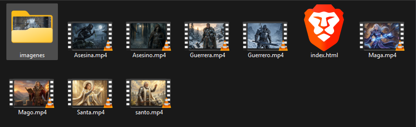
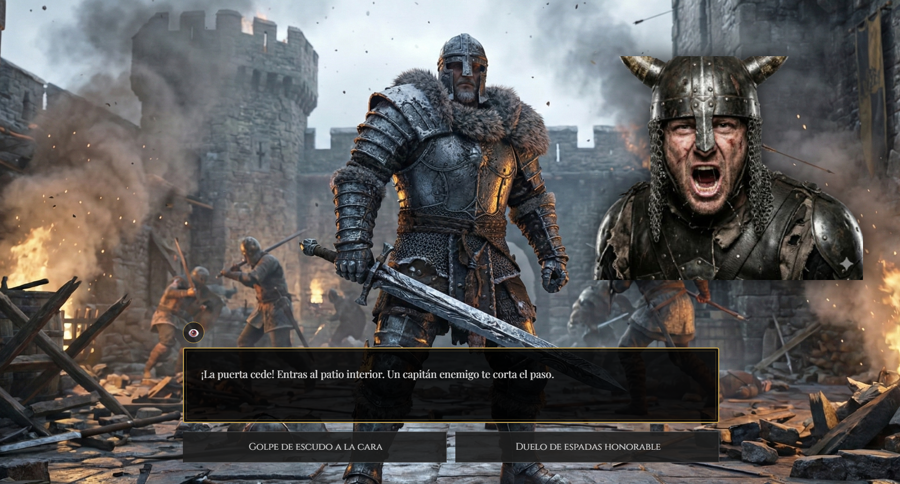
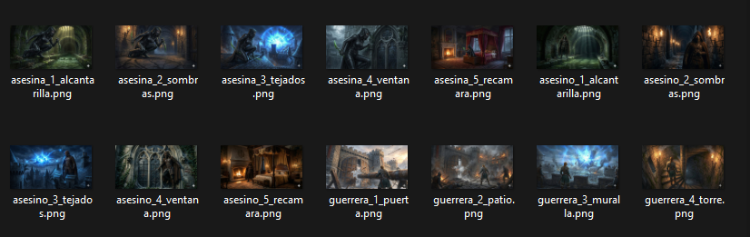
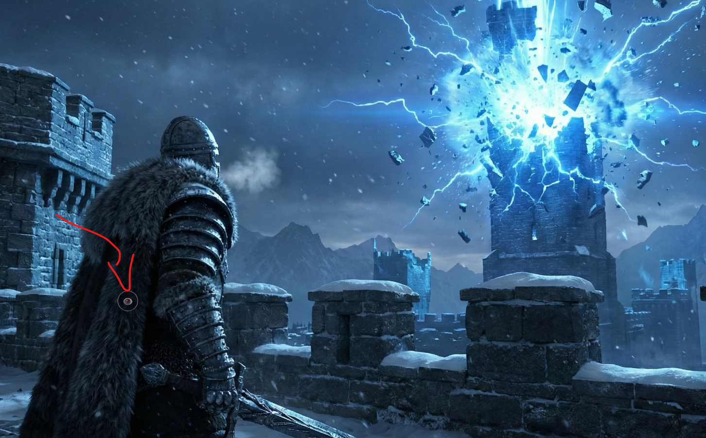

Documentación del Proyecto
Historial de Prompts y Requerimientos - El Asedio de Bastión Gris
Actúa como un Desarrollador Web Senior (Full Stack) y Escritor Creativo. Tu tarea es crear una Novela
Visual Web completa en un solo archivo index.html (que incluya CSS y JS). [Detalles del concepto,
mecánicas, estructura de datos stories, y requerimientos técnicos]
1. Concepto y Mecánicas
- Tema: "El Asedio de Bastión Gris". Una batalla contada desde 4 perspectivas simultáneas.
- Selección: Al inicio, el usuario elige **Género** (Hombre/Mujer) y **Clase** (Guerrero, Asesino, Mago, Santo).
- Al pasar el mouse por la clase, se muestra un video de fondo en bucle (ej: `guerrero.mp4` o `guerrera.mp4` según el género).
- Flujo de Juego:
- Hay 4 historias lineales (una por clase).
- Cada historia tiene **5 Escenas**.
- Interacción: En cada escena, se muestra una imagen, un texto narrativo y 2 o 3 opciones.
- Lógica de Elección: Al hacer clic en una opción, el texto narrativo se actualiza inmediatamente mostrando la **consecuencia** de esa acción (feedback). Debajo aparece un botón "Continuar" que lleva a la siguiente escena.
- Sincronización: Las historias ocurren a la vez. La Escena 3 es el punto de cruce: El Mago causa una explosión que los otros tres perciben desde su posición.
2. Estructura de Datos (Narrativa)
Debes implementar esta constante `stories` en el Javascript EXACTAMENTE como está escrita aquí para asegurar la coherencia de la trama:Ver Estructura JSON (stories)
const stories = {
warrior: [
{
img: "guerrero_1_puerta.png",
text: "La puerta de Bastión Gris se alza ante ti. El ariete golpea la madera. ¡BUM! Las flechas llueven.",
choices: [
{ label: "Cubrirse con el escudo y empujar", outcome: "Tu escudo vibra con los impactos, pero proteges a tus hombres mientras avanzan." },
{ label: "Gritar para inspirar a las tropas", outcome: "Tu rugido supera el estruendo de la batalla. Los soldados cargan con furia renovada." }
]
},
{
img: "guerrero_2_patio.png",
text: "¡La puerta cede! Entras al patio interior. Un capitán enemigo te corta el paso.",
character: "npc_capitan.png",
choices: [
{ label: "Golpe de escudo a la cara", outcome: "El capitán cae aturdido. Lo rematas sin piedad." },
{ label: "Duelo de espadas honorable", outcome: "Chocan aceros. Eres más fuerte y rompes su guardia de un tajo." }
]
},
{
img: "guerrero_3_muralla.png",
text: "Luchas en las murallas. De repente, una luz azul cegadora estalla en la colina lejana (el Mago). La torre de vigilancia explota.",
choices: [
{ label: "Aprovechar la confusión", outcome: "Mientras miran la explosión, atraviesas sus defensas distraídas." },
{ label: "Protegerse de los escombros", outcome: "Te cubres justo a tiempo mientras llueven piedras de la torre destruida." }
]
},
{
img: "guerrero_4_torre.png",
text: "Subes hacia la sala del trono. La guardia real bloquea la escalera de caracol.",
choices: [
{ label: "Usar tu fuerza bruta", outcome: "Los empujas escalera abajo como si fueran muñecos." },
{ label: "Intimidarlos", outcome: "Ven la sangre en tu armadura y se apartan temblando." }
]
},
{
img: "guerrero_5_trono.png",
text: "El Rey está acorralado. La batalla ha terminado. Eres el primero en llegar.",
character: "npc_rey.png",
choices: [
{ label: "Exigir su rendición", outcome: "El Rey suelta su espada. La victoria es nuestra." },
{ label: "Acabar con él", outcome: "La guerra termina con su vida. Tu nombre será leyenda." }
]
}
],
assassin: [
{
img: "asesino_1_alcantarilla.png",
text: "Mientras el ejército ataca la puerta, tú te deslizas por las alcantarillas. El olor es insoportable.",
choices: [
{ label: "Avanzar rápido ignorando el ruido", outcome: "Haces ruido al pisar agua, pero eres rápido. Nadie te ve." },
{ label: "Moverse lento y silencioso", outcome: "Tardas más, pero te deslizas como una sombra líquida." }
]
},
{
img: "asesino_2_sombras.png",
text: "Emerges en los pasillos del castillo. Dos guardias patrullan hablando de la batalla exterior.",
choices: [
{ label: "Lanzar una moneda para distraer", outcome: "Se giran hacia el sonido. Pasas por detrás sin ser visto." },
{ label: "Eliminarlos silenciosamente", outcome: "Dos cortes rápidos. Caen antes de tocar el suelo." }
]
},
{
img: "asesino_3_tejados.png",
text: "Estás en los tejados. ¡BOOM! Una explosión mágica azul ilumina el cielo. Todos los guardias miran hacia afuera.",
choices: [
{ label: "Es mi oportunidad, ¡correr!", outcome: "Corres por las tejas mientras ellos miran la luz del Mago." },
{ label: "Observar un segundo", outcome: "Esa magia... debe ser nuestro hechicero. El caos es tu aliado." }
]
},
{
img: "asesino_4_ventana.png",
text: "Llegas a la ventana de los aposentos reales. Está cerrada.",
choices: [
{ label: "Forzar la cerradura", outcome: "Click. Se abre suavemente." },
{ label: "Romper el cristal con tela", outcome: "Amortiguas el sonido. Entras rodando." }
]
},
{
img: "asesino_5_recamara.png",
text: "El Rey está solo, mirando un mapa, ajeno a tu presencia.",
character: "npc_rey.png",
choices: [
{ label: "Susurrar antes de atacar", outcome: "Se gira aterrorizado justo cuando tu hoja encuentra su cuello." },
{ label: "Veneno en su copa", outcome: "Lo viertes en su vino. Cae asfixiado segundos después." }
]
}
],
mage: [
{
img: "mago_1_colina.png",
text: "Estás en la colina frente al castillo. El viento aúlla. Debes preparar el hechizo de asedio.",
choices: [
{ label: "Comenzar el cántico lentamente", outcome: "Las palabras fluyen, la energía se acumula estable." },
{ label: "Forzar la energía del ambiente", outcome: "Es arriesgado, pero el maná se arremolina violentamente a tu alrededor." }
]
},
{
img: "mago_2_conjuro.png",
text: "Las runas brillan en el suelo. Un arquero enemigo te apunta desde la muralla.",
choices: [
{ label: "Crear barrera de viento", outcome: "La flecha se desvía inofensivamente." },
{ label: "Disparar un rayo rápido", outcome: "Fulminas al arquero antes de que dispare. Vuelves al ritual." }
]
},
{
img: "mago_3_explosion.png",
text: "¡El hechizo está listo! Sientes el poder arcano quemándote las manos. ¡AHORA!",
choices: [
{ label: "¡Liberar la Nova Azul!", outcome: "Un haz de luz pura impacta la torre. La explosión sacude la tierra." },
{ label: "Dirigir el impacto a la puerta", outcome: "La puerta se vaporiza. Tus aliados (el Guerrero) vitorean." }
]
},
{
img: "mago_4_caos.png",
text: "El esfuerzo te ha dejado agotado. Soldados enemigos salen de las ruinas hacia ti.",
character: "npc_enemigo.png",
choices: [
{ label: "Usar el último aliento para quemarlos", outcome: "Una llamarada final los consume." },
{ label: "Teletransportarse a corta distancia", outcome: "Apareces detrás de una roca, a salvo." }
]
},
{
img: "mago_5_vacio.png",
text: "La batalla termina. Desde la colina ves el humo y la victoria. Tu trabajo está hecho.",
choices: [
{ label: "Meditar para recuperar fuerzas", outcome: "La magia vuelve a fluir lentamente." },
{ label: "Observar el castillo conquistado", outcome: "Sonríes. Sin ti, no lo habrían logrado." }
]
}
],
saint: [
{
img: "santo_1_hospital.png",
text: "La tienda médica es un caos. Los heridos del frente (donde está el Guerrero) no paran de llegar.",
choices: [
{ label: "Organizar a las enfermeras", outcome: "El orden salva vidas. La eficiencia mejora." },
{ label: "Atender al más grave tú mismo", outcome: "Tus manos detienen la hemorragia. Salvado." }
]
},
{
img: "santo_2_heridos.png",
text: "Un soldado joven te agarra el brazo. 'No siento las piernas', grita.",
choices: [
{ label: "Rezar una plegaria de calma", outcome: "Una luz dorada lo envuelve. El dolor cesa." },
{ label: "Aplicar vendajes y hierbas", outcome: "Método tradicional pero efectivo. Se estabiliza." }
]
},
{
img: "santo_3_rezo.png",
text: "La tierra tiembla violentamente por una explosión mágica cercana (obra del Mago). El techo de la tienda cede.",
choices: [
{ label: "Sostener el pilar central", outcome: "Usas tu fuerza para evitar que la tienda colapse sobre los heridos." },
{ label: "Proteger a los pacientes con tu cuerpo", outcome: "Te caen escombros, pero ellos están a salvo." }
]
},
{
img: "santo_4_milagro.png",
text: "La moral está baja. Creen que vamos a perder. Necesitan un milagro.",
choices: [
{ label: "Invocar la Luz Sagrada", outcome: "Un pilar de luz sale de la tienda. Todos lo ven y recuperan la esperanza." },
{ label: "Dar un discurso de fe", outcome: "Tus palabras calan hondo. Los que pueden caminar, vuelven a luchar." }
]
},
{
img: "santo_5_paz.png",
text: "El silencio cae. La batalla ha terminado. Sales de la tienda al amanecer.",
choices: [
{ label: "Llorar por los caídos", outcome: "Tus lágrimas santifican el suelo." },
{ label: "Bendecir a los supervivientes", outcome: "Les das la paz que necesitan tras el horror." }
]
}
]
};
En algunos momentos, cuando se hace referencia a otra historia, se indica que es una referencia a otra
historia ej:De repente, una luz azul cegadora estalla en la colina lejana (el Mago). quita el "(el
mago)" , no quiero que salga eso especificado en ninguna de las historias
Ten en cuenta que las imágenes de las historias, están en la carpeta imágenes (los videos no)

Cuando empiece las historias quita el video del selector de personajes (Se quedaba de fondo por encima del
contenido)
Las imágenes de los NPCs se ven debajo de los menús de texto y elecciones, haz que se vea justo por
encima

Ten en cuenta que cuando selecciona el género de mujer las imágenes para la historia, el nombre de la
imagen pasa a femenino, por ejemplo: santo_1_hospital.png pasa a: santa_1_hospital.png Así con todas, el
masculino sigue igual claro.

Ahora ya no sale ninguna imagen, revisa que las hayas puesto correctamente.
- Se equivocó al hacer el cambio en los nombres
Ahora si. Vamos a otro tema, quiero cambiar la estructura de la página de la historia, quiero que las
posibles acciones las pongas en la misma línea, una opción izquierda, otra derecha, y además vas a
añadir botón para ocultar el menú del texto y poder ver la imagen de fondo

Haz que las imágenes de los NPCs salgan fuera del cuadro de texto, ponlo justo encima. Mueve el botón para
quitar el menú de texto a la izquierda.
-Ajustes finales.
Para generar las imágenes y videos de la web he usado estos prompt generados por Gemini con anterioridad en conjunto con el Prompt 1. Aquí tienes el texto que me dio Gemini:
Para que las historias tengan sentido visual, genera las imágenes usando estos prompts. (Te recomiendo usar Midjourney o DALL-E 3).
Estilo General (Añadir al final de cada prompt):
"Dark fantasy RPG video game art style, semi-realistic, cinematic lighting, highly detailed, 16:9 aspect ratio"
1. Videos de Selección (Personajes)
Genera la imagen y luego anímala con una IA de video si puedes, o úsala estática.
- Guerrero/a: "A tough knight in heavy plate armor, resting a giant sword on the ground, battlefield background."
- Asesino/a: "A hooded rogue with dual daggers, face hidden in shadow, purple magical smoke aura."
- Mago/a: "A powerful sorcerer holding a staff with a glowing blue crystal, floating rocks around."
- Santo/a: "A benevolent cleric in white and gold robes, holding a glowing book, soft divine light."
2. Escenarios (Storyline: Guerrero)
guerrero_1_puerta.png: "Huge wooden castle gate being smashed by a battering ram, arrows flying, first person view from the attackers side."guerrero_2_patio.png: "Inside a castle courtyard during battle, stone floor, debris, smoke."guerrero_3_muralla.png: "Castle ramparts view, a massive blue magical explosion in the distance destroying a tower."guerrero_4_torre.png: "A narrow stone spiral staircase inside a tower, torchlight on walls."guerrero_5_trono.png: "Medieval throne room, high ceilings, red carpet, victory atmosphere."
3. Escenarios (Storyline: Asesino)
asesino_1_alcantarilla.png: "Dark sewer tunnel, stone archway, green water, rats, dim light from a grate above."asesino_2_sombras.png: "Dark stone castle hallway at night, shadows, torches on walls."asesino_3_tejados.png: "Rooftops of a medieval castle at night, looking at a distant blue magical explosion in the sky."asesino_4_ventana.png: "Close up of a gothic window from the outside, climbing the wall."asesino_5_recamara.png: "Royal bedroom, luxurious bed, fireplace, shadows."
4. Escenarios (Storyline: Mago)
mago_1_colina.png: "A rocky hill overlooking a castle siege from a distance, stormy sky."mago_2_conjuro.png: "Magic circle glowing blue on the ground, magical runes floating in air."mago_3_explosion.png: "First person view of shooting a massive blue laser beam towards a castle."mago_4_caos.png: "Battlefield covered in magical blue smoke and fire."mago_5_vacio.png: "The same rocky hill but calm now, smoke rising from the castle in the distance."
5. Escenarios (Storyline: Santo)
santo_1_hospital.png: "Interior of a medieval medical tent, cots with wounded soldiers, candlelight."santo_2_heridos.png: "Close up of hands glowing with golden light healing a wound."santo_3_rezo.png: "Interior of the tent shaking, dust falling from ceiling, chaotic angle."santo_4_milagro.png: "Bright blinding golden light filling the tent, divine atmosphere."santo_5_paz.png: "Outside the medical tent at sunrise, peaceful morning."
6. NPCs (Personajes superpuestos)
Asegúrate de recortar el fondo de estos o pedir "white background" para quitarlo fácil.
npc_capitan.png: "Portrait of an angry enemy captain shouting, helmet on."npc_rey.png: "Portrait of a defeated king, looking tired and afraid, crown crooked."npc_enemigo.png: "Portrait of a scary soldier with a dark helmet."